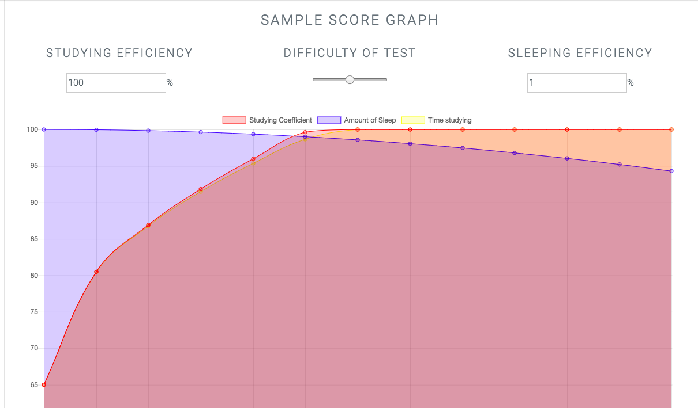

Sleep Research
How exactly do your grades relate to both sleep and amount of studying?
The Academic Costs of Extra Studying at the Expense of Sleep
Our main article which we used to both develop our thesis, and model our function. Using the data found in this article along with the data found in others we were able to make an accurate and reliable function for find the maximum score on a test with limited time.
Auxiliary References
- Sleep Accelerates the Improvement in Working Memory Performance
- Learning performance is linked to procedural memory consolidation across both sleep and wakefulness
- Randomization Test on Sleep Deprivation Scores
- Sleep, Sleep Deprivation, and Human Performance in Continuous Operations
- Effects of sleep deprivation on cognitive and physical performance in university students
- Want to Memorize Something? Take a Nap
- Poor Sleep Causes Memory Loss And Forgetfulness
- If students study more will their marks increase?
Our Calculator
Our calculator uses a plethora of 2D graphing algorithms and OR (Operations Research) functions to solve for 3 fundamental variables. Our experimental equation and graph are accessible below. The equation is valid through 0<=time(mins)<=1280. Any values above 100% will be corrected in our program to 100%. This equation is used in our main calculator and is made by combining our smaller equations into one larger one.
Test our algorithm out!
Calculate Sleep Based on Test Results and Amount of Studying
This calculator will give a rudimentary ballpark figure based on our state-of-the-art algorithm. Miscalculation rate of approximately 10%.